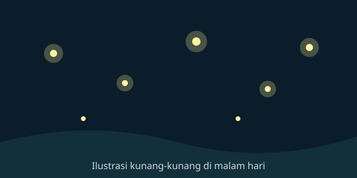

Kunang-Kunang Watch: Mengamati Cahaya Kecil di Malam Hari

Kunang-Kunang Watch adalah situs informasi dan pelaporan sederhana bagi siapa saja yang ingin mengenal serta mengamati kunang-kunang secara bertanggung jawab. Kunang-kunang sering dianggap sebagai penanda lingkungan yang masih cukup sehat, sehingga catatan pengamatan warga dapat membantu kita memahami kondisi habitatnya.
Apa yang Bisa Kamu Lakukan di Sini?
- Membaca artikel pengenalan tentang kunang-kunang.
- Mempelajari etika pengamatan agar tidak mengganggu satwa.
- Mengirim laporan pengamatan melalui formulir.
Ringkasan Halaman
| Halaman | Isi | Tautan |
|---|---|---|
| Artikel | Pengenalan, siklus hidup, dan ancaman kunang-kunang | Buka artikel |
| Etika Pengamatan | Panduan boleh dan tidak boleh saat mengamati | Buka panduan |
| Lapor Pengamatan | Formulir pelaporan temuan kunang-kunang | Isi formulir |
Mengapa Penting?
Indikator lingkungan
Banyak jenis kunang-kunang membutuhkan lingkungan yang gelap, lembap, dan relatif bersih. Hilangnya mereka dapat menjadi tanda adanya perubahan pada habitat.
Sains warga
Laporan dari masyarakat membantu peneliti mengetahui di mana kunang-kunang masih dapat ditemukan.